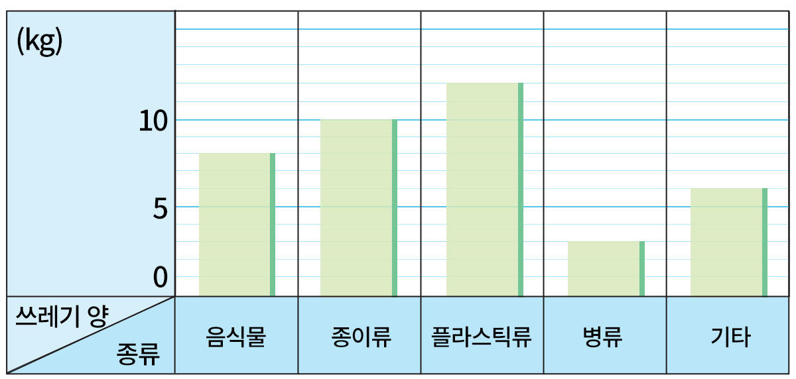
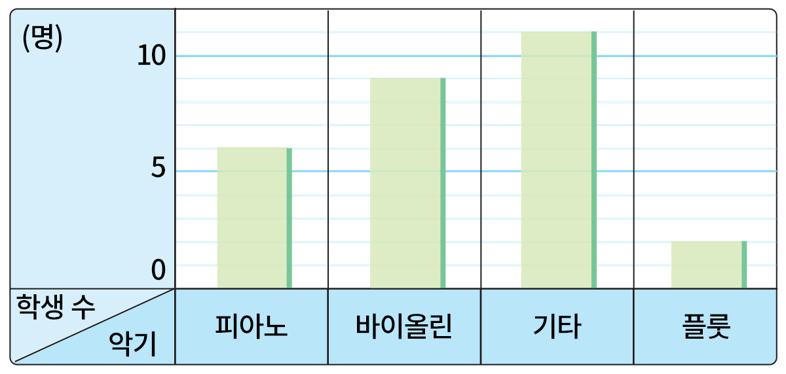

- 문제 1
- 문제 2
- 문제 3
- 문제 4
- 문제 5
- 문제 6
- 문제 7
- 문제 8
- 문제 9
-
[문제 1~문제 4]도서관에 있는 책 수를 조사하여 나타낸 막대그래프입니다. 물음에 답하시오.
가로와 세로는 각각 무엇을 나타냅니까?
도서관에 있는 책 수(권)100
500책 수종류위인전동화책만화책과학책가로책의 종류세로책 수 -
[문제 1~문제 4]도서관에 있는 책 수를 조사하여 나타낸 막대그래프입니다. 물음에 답하시오.
세로 눈금 한 칸은 몇 권을 나타내나요?
도서관에 있는 책 수(권)100
500책 수종류위인전동화책만화책과학책권10 -
[문제 1~문제 4]도서관에 있는 책 수를 조사하여 나타낸 막대그래프입니다. 물음에 답하시오.
50권보다 적게 있는 책의 종류는 무엇인가요?
도서관에 있는 책 수(권)100
500책 수종류위인전동화책만화책과학책위인전 -
[문제 1~문제 4]도서관에 있는 책 수를 조사하여 나타낸 막대그래프입니다. 물음에 답하시오.
도서관에 가장 많이 있는 책의 종류는 무엇인가요?
도서관에 있는 책 수(권)100
500책 수종류위인전동화책만화책과학책동화책 -
행복 마을에서 일주일 동안 배출된 쓰레기의 양을 조사하여 나타낸 막대그래프입니다. 가장 많이 배출된 쓰레기는 무엇인지 쓰시오.
일주일 동안 배출된 쓰레기 양플라스틱류 -
행복 마을에서 일주일 동안 배출된 쓰레기의 양을 조사하여 나타낸 막대그래프입니다. 음식물 쓰레기는 몇 kg인지 쓰시오.
일주일 동안 배출된 쓰레기 양8 kg -
행복 마을에서 일주일 동안 배출된 쓰레기의 양을 조사하여 나타낸 막대그래프입니다. 많이 배출된 쓰레기부터 차례로 말해 보시오.
일주일 동안 배출된 쓰레기 양플라스틱류, 종이류,
음식물, 기타, 병류 -
지윤이네 반 학생들이 여름 방학에 배우고 싶은 악기를 조사하여 나타낸 막대그래프입니다. 학생들이 두 번째로 많이 배우고 싶어 하는 악기는 무엇인지 쓰시오.
배우고 싶은 악기별 학생 수바이올린 -
지윤이네 반 학생들이 여름 방학에 배우고 싶은 악기를 조사하여 나타낸 막대그래프입니다. 플룻을 배우고 싶은 학생 수의 3배인 악기는 무엇인지 구하시오.
배우고 싶은 악기별 학생 수피아노